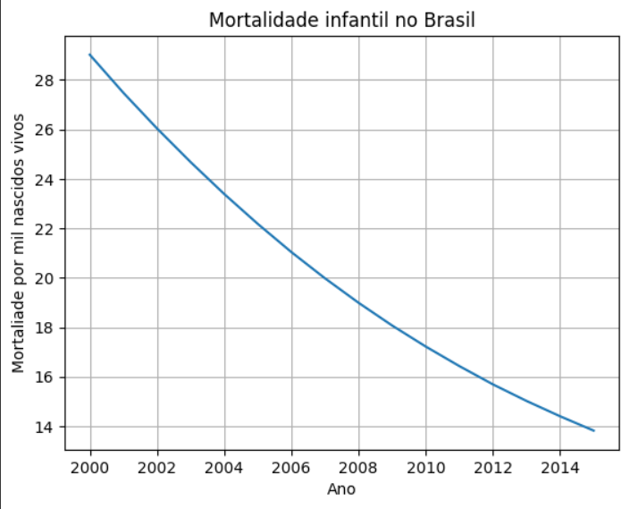

Identificação do Problema:
O grande tempo de espera em recepções de hospitais ou ambulatórios é algo muito comum em muitos locais, assim causando uma irritação nos pacientes e gerando um ambiente de trabalho mais caótico.
Com isso desenvolvemos um sistema para otimizar o tempo de espera dos pacientes e priorizar pacientes com enfermidades mais graves.
Para ver a soluçãoClick aqui.
Dados de differentiated problem solving
Com o gráfico apresentado percebemos então que ela vem diminuindo com o passar do tempo.
Com o grafico apresentado percebemos então que a ela vem diminuindo com o passar do tempo.
Esse foi apenas um estudo aleatório, iremos implementar funcionalidades para analisarmos dados dos pacientes dessa forma, para podermos melhorar o atendimento ainda mais e gerar pesquisas acadêmicas.